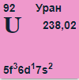

Уран

Ура́н (U, лат. Uranium; устар. название — ура́ний) — химический элемент 3-й группы (по устаревшей классификации — третьей группы побочной подгруппы, IIIB)
седьмого периода периодической системы химических элементов Д. И. Менделеева, с атомным номером 92.
Относится к семейству актиноидов.
Простое вещество Уран — это слабо радиоактивный металл серебристо-белого цвета, не имеющий стабильных изотопов.
Самыми распространёнными изотопами урана являются уран-238 (имеет 146 нейтронов, в природном уране составляет 99,3 %)
и уран-235 (143 нейтрона, содержание в природном уране 0,7204 %).
Физические свойства
Уран — это очень тяжёлый, слабо радиоактивный глянцевитый металл серебристо-белого цвета. В чистом виде он немного мягче стали, ковкий, гибкий, обладает небольшими парамагнитными свойствами. Температура плавления 1132,3 °C. Уран имеет три кристаллические модификации:
- α-U, (стабильна до 667,7 °C), ромбическая сингония, пространственная группа C mcm, параметры ячейки a = 0,2858 нм, b = 0,5877 нм, c = 0,4955 нм, Z = 4;
- β-U, (стабильна от 667,7 °C до 774,8 °C), тетрагональная сингония, пространственная группа P 42/mnm, параметры ячейки a = 1,0759 нм, c = 0,5656 нм, Z = 30;
- γ-U, (существующей от 774,8 °C до точки плавления при 1132,2 °C), кубическая сингония, пространственная группа I m3m, параметры ячейки a = 0,3524 нм, Z = 2.
Изотопы
Радиоактивные свойства некоторых изотопов урана (жирным выделены природные изотопы):
| Массовое число | Период полураспада | Основной тип распада |
|---|---|---|
| 233 | 1,59⋅105 лет | α |
| 234 | 2,45⋅105 лет | α |
| 235 | 7,13⋅108 лет | α |
| 236 | 2,39⋅107 лет | α |
| 237 | 6,75 сут. | β- |
| 238 | 4,47⋅109 лет | α |
| 239 | 23,54 минуты | β- |
| 240 | 14 часов | β- |